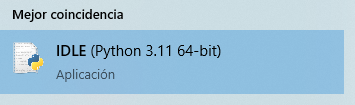
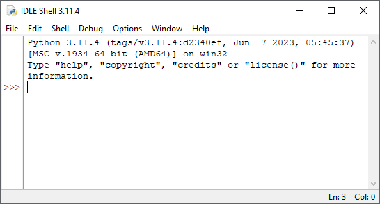
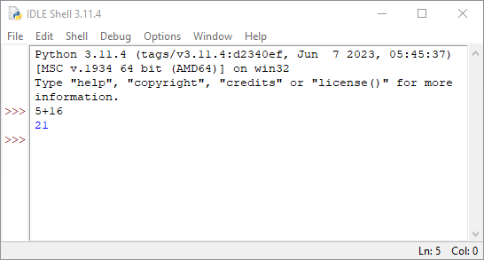

1. Introduction to the Python language¶
Programming languages are a way of telling a computer what to do. It's like giving commands to a robot, but instead of using words, we use a special language called code. Programming languages have their own rules and syntax, and each is suitable for different purposes.
Programmers write code to do things like create video games, desktop applications, mobile apps, or web pages. They can even use programming languages to analyze large amounts of data and make predictions.
Programming languages are used in a wide variety of fields, from computer science and engineering to financing and data analysis. Knowledge of a programming language is a valuable skill for anyone who wants to work in the technology field.
In this course we will learn to program in Python language. Python is a very popular and very powerful programming language. It is used to do many different things, such as creating web applications, analyzing data, creating artificial intelligence programs, and even controlling robots. It is a very easy language to learn and has a clear and simple syntax, which means it is easy to read and write.
Additionally, there is a lot of information and resources available online for learning Python, making it even more accessible. You can find tutorials, books, and videos to help you get started programming in Python.
Would you like to be a programmer in the future? Learning Python is a great start! With dedication and practice, you can do many amazing things with this language. Good luck on your Python learning journey!
The Python IDLE Environment¶
To start programming we are going to open the standard Python programming environment, called IDLE. Click on the Windows icon and type the word IDLE. Next click on the IDLE icon.
If the IDLE icon does not appear, then you need to first install the Python language on your computer. Download Python from the official website and run the installer. After installing Python go back to the previous point.
A programming environment will appear like the one you can see in the following image:
Now, to begin, we will type a simple count: 5 + 16 and press enter (or return) at the end. The screen will show the result on the following line:
We can write any simple operation or more complex operations. This environment is called interactive environment, because Python receives written commands and returns responses immediately.
Python Macros¶
Another way to program is to create command files that will be executed later when we want. This other way of programming has the disadvantage of not being interactive, we do not receive a response to each order we write. The advantage of writing macros is that we can have many commands written to execute them whenever we want and as many times as we want.
To create a new macro, click inside IDLE on the File option and then on New File.
A new window will open where we can write orders, but without receiving responses. You will no longer be able to see the cursor with three >>> symbols. We will write within this window the orders that can be seen below:
When we're done, we're going to save this exercise to the Python folder on data drive D:
D:\Python\Exercise01.py
Now we can run the program by clicking on the Run menu or by pressing the F5 function key. The result will be the following:
You must respond to the program by typing the numbers it asks for and pressing Enter after each number.
We can run this program as many times as we want and we can add all the commands we want to the program.
To reopen the program once closed, you must click on the icon of your saved Python file and, by pressing the right mouse button, choose the "Edit with IDLE" option.